Solving 3-T radiation diffusion equation is often a critical step in simulation of multi-physics, and material mixing often happens no matter how fine the resolution of a simulation is. Mesh refinement only can reduce the number of materials within a cell, but cannot eliminate mixing cells in simulations. Treatment of mixing cells is critical for many applications. Since material property of mixture of materials is unknown, a mixing cell is decomposed to a set of sub-cells through material interface reconstruction so that each sub-cell contains only one material. The sub cells ithus generated are general polygons and polyhedrons. Radiation diffusion equations are solved on the mesh with these general polygons in two dimensions and polyhedrons in three dimensions.
Two typical implicit methods are the backward Euler method and Crank-Nicolson method. The backward Euler method is first order accurate in time, but numerical errors in the method undergo quick damping for large time steps. Therefore the method is very useful for large time steps and steady states. Although Crank-Nicolson method is second order accurate, numerical errors do not damp out for large time steps, and significant numerical errors will be introduced when time steps are large. The formulation for large time steps is very important for problems involving dramatically different materials even for time-dependent problems. A given time step may be considered so large for some material that the formulation for steady state is more appropriate for the material than the formulation with the second order of accuracy, but the time step is so small for other materials that accuracy in time is more important for them. The scheme we will present is second order accurate in both space and time, works for any size of time steps, and will give exact steady states when time steps are very large.
For systems of multi-materials with dramatically different material properties, the correct treatment for the discontinuity of material properties is important. A typical approach for this is to use mathematical approximations, which could introduce numerical errors when thermal properties of two materials are very different. We use the governing physics to give formula for effective diffusion coefficient across a material interface for flux calculations on polyhedral meshes.
Another important aspect in numerical simulations for 3-T radiation equations is the numerical treatment for interaction between radiation and material. The 3-T radiation diffusion equations are often solved through operator splitting. One typical operator splitting method is to separate the diffusion process from the interaction, and another is to separate each diffusion process from each other. Both of the methods are first order accurate. More seriously, both would result in serious errors in simulation results for some problems. In the numerical scheme we will present, radiation and material are fully coupled, and three temperatures are solved simultaneously.
The equations we are solving is for a system of plasma with radiation. When the time scale for equilibration of photons, electrons, and ions is much shorter than the time scale for exchange in each species energy content due either to interaction between them or to external sources, photons, electrons, and ions are each in a state of local thermodynamic equilibrium, photons' energy distribution are given by the Planck distribution, and those for electrons and ions are Maxwellian. Their associated temperatures,
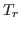
,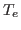
, and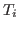
, do not need to be equal. The set of 3-T radiation diffusion equations is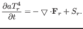 |
(1) |
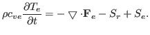 |
(2) |
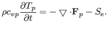 |
(3) |
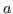
is the radiation constant, the material mass density, and and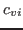
specific heat capacities of electrons and ions.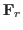
,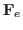
, and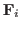
are energy fluxes of radiation, electrons, and ions respectively, and they are defined as
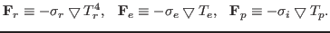 |
(4) |
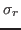
,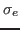
, and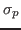
are diffusion coefficients of temperatures of radiation, electrons, and ions. is inversely proportional to the Rosseland mean opacity that includes atomic processes such as Bremsstrahlung, photo-ionization, line-absorption, and Thompson scattering. The source terms in Eqs.(1-3) are defined as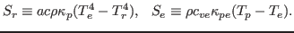 |
(5) |
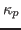
Planck mean opacity, and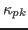
the coefficient for interaction between electrons and ions. The term,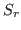
, in Eqs.(1,2) allows for the exchange of energy between radiation and electrons.The numerical scheme to be presented is intended to be used in a code for multi-physics. It is an extension of previous work to include mixing cells and unstructured meshes. For mixing cells, we consider the interface reconstruction with any number of materials in both two- and three-dimensional meshes with AMR.
In this talk, we will first describe the procedure for interface reconstruction in both two- and three-dimensions within AMR meshes with any number of materials, and then we will present the scheme for Eqs.(1-3) in both two- and three-dimensions and an iterative solver to solve the set of resulting difference equations. We finally will demonstrate the features of the scheme through numerical examples in two- and three-dimensions. Particularly, we will show the difference in simulation results between the two approaches: fully coupling and operator-splitting.